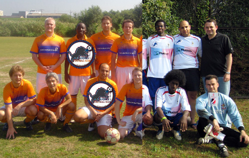

|
YCAC ground on Sunday 4th March, 1pm, will witness one of the games of the season. Both teams have players that travelled in opposite directions. Lions captain Gaafar Somi and striker Hussein Shehata were Barbs regulars last season, and Lions players like M. Birkiya played a few matches for Barbs last year, as Barbs’ Fred Delsaux featured in many friendlies for Lions.
Barbs and Lions enjoyed a good relationship that was rocked by the controversial transfer of Barbs’ goalkeeper Mike from Lions halfway through this season.
Current form favours Barbs, however a pre-season friendly saw Lions cruise through Barbs to win 3-1 in a flattering result then for Barbs.
Lions’ recent poor form is due to lack of commitment; however, the full squad has been gathered to mark the re-birth of a rejuvenated and once feared Lions against Barbs.
Lions currently hold up the table, and are determined to finish in a more respectable position, and the only prize to play for now, is a Barbs scalp!

Report by Hussein Shehata.
|